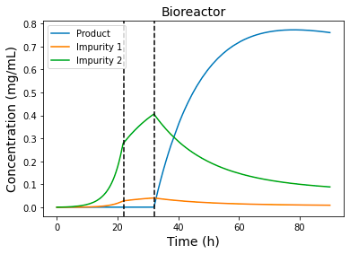
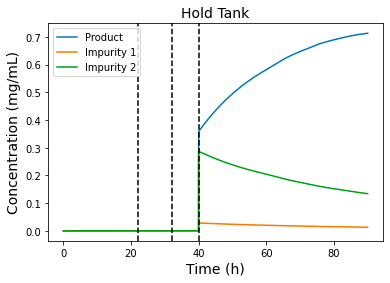
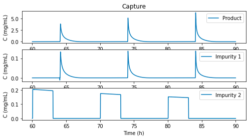
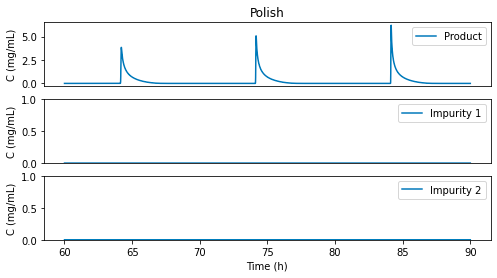

Running the plantwise simulation with initial state x0 and default model parameters, process time
and inlet substrate concentrations
from vLab.IntegratedBioprocess.PlantwiseSimulator import PlantwiseSimulator
X0 = 0.1 # initial viable biomass concentration (g/L)
Sg0 = 40 # initial glycerol concentration (g/L)
Sm0 = 0 # initial methanol concentration (g/L)
P10 = 0 # initial product conentration (g/L)
P20 = 0
P30 = 0
VB0 = 0.5 # initial bioreactor volume (L)
VH0 = 1e-8 # initial hold tank volume (L)
x0 = [X0, Sg0, Sm0, P10, P20, P30, VB0, P10, P20, P30, VH0]
xC0 = [0] * (10 * 30 + 3)
x0 = x0 + xC0
import time
start_time = time.time()
solver = PlantwiseSimulator()
sol = solver.solve(x0)
elapse_time = time.time() - start_time
Import the matplotlib and numpy for plot
import numpy as np
import matplotlib.pyplot as plt
t = np.array(sol.t)
x = np.array(sol.x)
plt.plot(t, x[:, 3:6])
plt.axvline(solver._process_time[1], ls='--', c='k')
plt.axvline(solver._process_time[2], ls='--', c='k')
plt.title('Bioreactor', fontsize=14)
plt.ylabel('Concentration (mg/mL)', fontsize=14)
plt.xlabel('Time (h)', fontsize=14)
plt.legend(['Product', 'Impurity 1', 'Impurity 2'], loc='upper left')
plt.show()

plt.plot(t, x[:, 7:10])
plt.axvline(solver._process_time[1], ls='--', c='k')
plt.axvline(solver._process_time[2], ls='--', c='k')
plt.axvline(solver._process_time[3], ls='--', c='k')
plt.title('Hold Tank', fontsize=14)
plt.ylabel('Concentration (mg/mL)', fontsize=14)
plt.xlabel('Time (h)', fontsize=14)
plt.legend(['Product', 'Impurity 1', 'Impurity 2'], loc='upper left')
plt.show()

Plot the capture step in chromatography
tC = t[t >= solver._process_time[4]]
nrows = len(tC)
xC = x[t >= solver._process_time[4], 11:]
yplot = xC[:, :(30 * 10)].reshape(nrows, 10, 30, order='F')
plt.figure(figsize=(8,4))
plt.subplot(311)
plt.plot(tC, yplot[:, 0, -1], label='Product')
plt.title('Capture')
plt.ylabel('C (mg/mL)')
plt.legend(loc='upper right')
plt.subplot(312)
plt.plot(tC, yplot[:, 1, -1], label='Impurity 1')
plt.ylabel('C (mg/mL)')
plt.legend(loc='upper right')
plt.subplot(313)
plt.plot(tC, yplot[:, 2, -1], label='Impurity 2')
plt.ylabel('C (mg/mL)')
plt.xlabel('Time (h)')
plt.legend(loc='upper right')

Plot polish step in chromatography!
plt.figure(figsize=(8,4))
plt.subplot(311)
plt.plot(tC, yplot[:, 4, -1], label='Product')
plt.title('Polish')
plt.ylabel('C (mg/mL)')
ax = plt.gca()
ax.axes.xaxis.set_visible(False)
plt.legend(loc='upper right')
plt.subplot(312)
plt.plot(tC, yplot[:, 5, -1], label='Impurity 1')
plt.ylim((0,1))
plt.ylabel('C (mg/mL)')
plt.legend(loc='upper right')
ax = plt.gca()
ax.axes.xaxis.set_visible(False)
plt.subplot(313)
plt.plot(tC, yplot[:, 6, -1], label='Impurity 2')
plt.ylim((0,1))
plt.ylabel('C (mg/mL)')
plt.xlabel('Time (h)')
plt.legend(loc='upper right')
